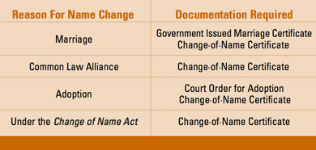

Ontario has a one-piece driver’s licence. The licence card has a photograph and signature of the driver. All drivers in Ontario should have a one-piece licence card.
You must carry your licence with you whenever you drive.
Renewing your licence
You will get a renewal application form in the mail. Take the form into any ServiceOntario Centre in the province. They are all equipped to take photographs. You will be asked to sign the form, show identification, pay a fee and have your photograph taken. You will get a temporary licence on the spot if your application and documents are in order, and your permanent one will be mailed to you. You must carry it with you whenever you drive and produce it when a police officer requests it.
If you do not get a renewal application form in the mail when your licence is due for renewal, call the Ministry of Transportation. You are responsible for making sure you have a valid driver’s licence. You can renew an expired car or motorcycle driver’s licence within one year without taking any tests.
If your licence has been suspended, cancelled or expired for more than three years, you will be required to re-apply for a licence in Ontario and meet all the requirements of graduated licensing, including passing all the required tests.
Senior drivers age 80 or older
Licensing
If you are 80 years of age or older, you are required to renew your driver’s licence every two years. This renewal process helps keep seniors mobile and independent longer, while helping to ensure that unsafe drivers are identified and appropriate actions are taken.
Before your licence expires, you will receive a driver’s licence renewal application form and a letter in the mail explaining the steps you need to complete.
First, you should:
- watch the senior driver education video
- review the rest the Official Ministry of Transportation Driver’s handbook
- visit Ontario.ca/seniordriver for further details
Your next step is to book an appointment at a ServiceOntario centre, which you can do:
- online: book a ServiceOntario appointment
- by calling toll-free at 1-800-396-4233
- by calling 416-235-3579 in the Greater Toronto area
At the appointment you will be required to complete a vision test and a five minute screening exercise.
After the session, if you successfully complete all the requirements, you will be able to renew your licence.
However, you may also need to pass a road test, follow up with your doctor and submit medical information or provide additional vision information from a doctor or optometrist before being able to renew your licence. If additional medical information is required, you will be notified by mail.
There is no charge for any of the licence-renewal requirements. You only have to pay the licence-renewal fee.
More information relating to senior drivers can be found at Ontario.ca/seniordriver. You can also:
- call toll free at 1-800-396-4233
- call 416-235-3579 in the Greater Toronto area
How aging affects driving safety
- Reduced vision - especially at night
- Difficulty judging distance and speed
- Limited movement and range of motion
- Slower reaction time
- Difficulty focusing attention for long periods of time
- Easily distracted
- More time needed to understand what you see and hear
- More use of prescription and/or over-the-counter drugs that may impair your driving ability
What you can do to make your driving safer
Your health is a key factor in your ability to drive. To help you handle the demands of safe driving:
- Check with your doctor or pharmacist to make sure current and new medications will not negatively affect your ability to drive. Over-the-counter drugs and combinations of drugs can also impair your driving.
-
Report to your doctor:
- vision changes, unexplained dizziness or fainting spells;
- frequent, chronic or severe pain.
- Avoid driving if you're experiencing pain. It can decrease your ability to concentrate and limit your movement behind the wheel.
- Have your hearing and eyes checked regularly. Peripheral vision and depth perception tend to decline over the years.
- Your doctor can recommend an exercise program to improve flexibility and maintain strength, which can help your ability to drive safely.
- Consider taking a driver’s course to refresh your knowledge of the rules of the road and safe driving practices.
Ask yourself: How’s my driving?
Take this test and ask yourself these questions:
- Am I experiencing an increasing number of near collisions?
- Have I been directly involved in minor collisions?
- Do I have difficulty driving through intersections, judging distance or seeing pedestrians, road signs or other vehicles?
- Do I have difficulty concentrating while driving?
- Do I get lost or disoriented on familiar roads?
- Do I have difficulty coordinating hand and foot movements?
- Am I experiencing vision problems, especially at night?
- Do I get nervous behind the wheel?
- Do other motorists frequently honk at me?
- Do family members express concern about my driving ability?
- How important is driving to me?
Your answers to these questions can help you decide whether to continue to drive, cut back to certain times such as daylight hours or stop driving altogether. If you have checked one or more of the warning signs and are concerned about your driving ability, talk to your doctor or family and get their opinions.
At the group education session, you will learn more about these topics on senior driver safety.
Graduated licensing requalification
Under graduated licensing, novice drivers (Class G1, G2, M1 and M2) progress through a two-step licensing process by completing the mandatory time periods for each level and passing the required road tests. Except for Class M1, novice drivers have five years to complete the graduated-licensing process. However, if your Class G1, G2 or M2 licence is about to expire and you have not completed the process, you can regain or retain the same class of licence by passing a test and paying the five-year licensing fee. This is called “requalification.” A notice is sent to Class G1, G2 and M2 drivers before their licence expiry date to inform them of their options. If you do not complete the graduated-licensing process or requalify before your G1, G2 or M2 licence expires, you will not have a licence to drive, and you must reapply for a Level One licence.
Changing your name or address
You must tell the Ministry of Transportation within six days of changing your name or address.
You will need a new licence when you change your address. You can change your address on the ServiceOntario website or you can take the change of information to a Driver and Vehicle Licence Issuing Office, or mail it to the Ministry of Transportation, P.O. Box 9200, Kingston, ON, K7L 5K4. The ministry will send you a new licence. When you get it, destroy your old licence and carry the new one with you whenever you drive.
When your name changes, you need a new licence. Take the documents you must show (see the chart on this page) and your current licence to a Driver and Vehicle Licence Issuing Office. A new photograph will be taken. You will get a temporary licence to use until your permanent licence is mailed to you. Carry it with you whenever you drive.
There is no charge for getting a new licence because you change your name or address.
The chart on this page shows the documents you will need to change the name on your driver’s licence.

Driver’s licence laws
It is illegal to:
- Lend your licence
- Let someone else use it
- Use an altered licence
- Use another licence as your own
- Have more than one Ontario driver’s licence
- Use a fictitious or imitation licence
The demerit point system
The demerit-point system encourages drivers to improve their behaviour and protects people from drivers who abuse the privilege of driving. Drivers convicted of driving-related offences have demerit points recorded on their records. Demerit points stay on your record for two years from the date of the offence. If you accumulate too many demerit points, your driver’s licence can be suspended.
New drivers - demerit-point system for Level One and Level Two drivers
Two or more points
You will receive a warning letter.
Six points
You will receive a second warning letter encouraging you to improve your driving behaviour.
Nine or more points
Your licence will be suspended for 60 days from the date you surrender it to the Ministry of Transportation. You can lose your licence for up to two years if you fail to surrender your licence. After the suspension, the number of points on your record will be reduced to four. Any extra points could again bring you to the interview level. If you reach nine points again, your licence may be suspended for six months.
As a Level One or Level Two driver, you will have your licence suspended if you accumulate nine or more demerit points during a two-year period.
Note: If you are a novice driver and are convicted of violating any novice condition, an offence that is associated with four or more demerit points or receive a court-ordered suspension for an offence that would have resulted in four or more demerit points, you will receive the appropriate penalty and Novice Driver Escalating Sanction licence suspension. However, the demerit points will be recorded as zero on your record, and will not be counted towards the accumulated demerit point system.
Fully licensed drivers - demerit-point system for fully licensed drivers
Six points
You will receive a warning letter recommending that you improve your driving skills.
Nine points
You will receive a second warning letter encouraging you to improve your driving behaviour.
15 points
Your licence will be suspended for 30 days from the date you hand over your licence to the Ministry of Transportation. You can lose your licence for up to two years if you fail to surrender it. After the suspension, the number of points on your driver’s record will be reduced to seven. Any extra points could again bring you to the interview level. If you reach 15 points again, your licence will be suspended for six months.
Table of offences
Here are the demerit points for driving offences.
Seven points
- Failing to remain at the scene of a collision
- Failing to stop for police
Six points
- Careless driving
- Racing
- Exceeding the speed limit by 40km/h or more on roads with a speed limit of less than 80km/h
- Exceeding the speed limit by 50 km/h or more
- Failing to stop for a school bus
Five points
- Driver of bus failing to stop at unprotected railway crossing
Four points
- Exceeding the speed limit by 30 to 49 km/h
- Following too closely
- Failing to stop at a pedestrian crossover
Three points
- Exceeding the speed limit by 16 to 29 km/h
- Driving through, around or under a railway crossing barrier
- Driving while holding or using a hand-held wireless communications/entertainment device or viewing a display screen unrelated to the driving task
- Failing to yield the right-of-way
- Failing to obey a stop sign, traffic light or railway crossing signal
- Failing to obey traffic control stop sign
- Failing to obey traffic control slow sign
- Failing to obey school crossing stop sign
- Failing to obey the directions of a police officer
- Driving the wrong way on a divided road
- Failing to report a collision to a police officer
- Improper driving where road is divided into lanes
- Crowding the driver’s seat
- Going the wrong way on a one-way road
- Driving or operating a vehicle on a closed road
- Crossing a divided road where no proper crossing is provided
- Failing to slow and carefully pass a stopped emergency vehicle
- Failing to move, where possible, into another lane when passing a stopped emergency vehicle
- Driving a vehicle equipped with a radar detector
- Improper use of a high-occupancy vehicle (HOV) lane
- Improper opening of a vehicle door
Two points
- Failing to lower headlight beam
- Prohibited turns
- Towing people - on toboggans, bicycles, skis, for example
- Failing to obey signs
- Failing to share the road
- Improper right turn
- Improper left turn
- Failing to signal
- Unnecessary slow driving
- Reversing on a highway
- Driver failing to wear a seatbelt
- Driver failing to ensure infant passenger is secured
- Driver failing to ensure toddler passenger is secured
- Driver failing to ensure child is secured
- Driver failing to ensure passenger under 16 years is wearing seatbelt
- Driver failing to ensure that a passenger under 16 years is sitting in a seat that has a seatbelt